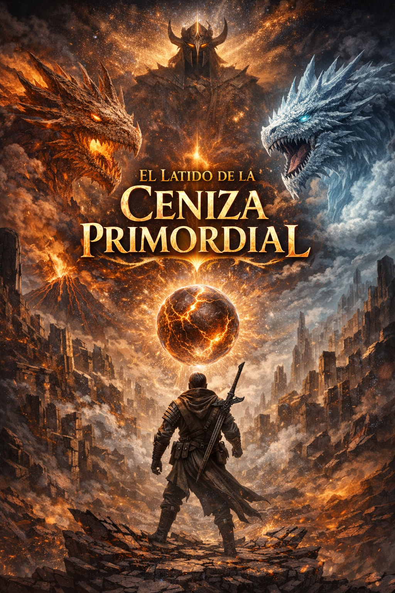
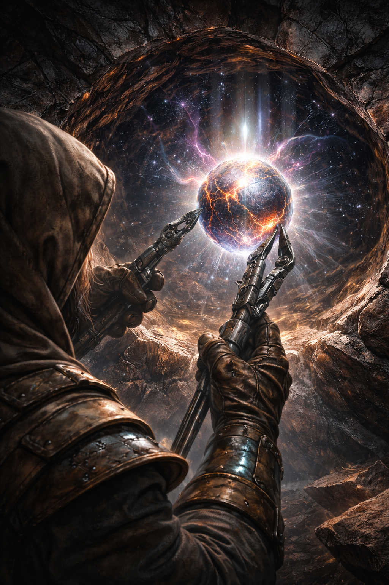

ACTO II — La investigación de Kaelen
La barrena continuaba girando contra la obsidiana con un zumbido grave que vibraba en los huesos. Chispas violetas se elevaban desde el punto de contacto como pequeños insectos de luz antes de desvanecerse en el aire gris de Valthera.
Kaelen mantenía la herramienta firme, pero su mente ya no estaba completamente en el presente.
El latido bajo la piedra tenía un ritmo extraño.
Hipnótico.
Con cada pulso, recuerdos que llevaba años intentando ignorar comenzaban a abrirse paso en su conciencia.
La academia de Aurelion.
El lugar donde todo había comenzado.
Las torres de Aurelion eran lo opuesto a las ruinas de Valthera.
Donde Valthera estaba muerta, Aurelion estaba saturada de vida intelectual. Sus cúpulas de cristal reflejaban la luz del firmamento como espejos gigantescos, y sus corredores resonaban constantemente con debates sobre cosmología, magia estructural y las leyes que gobernaban la realidad.
Kaelen había llegado allí cuando tenía apenas diecisiete ciclos solares.
Un prodigio, según los registros.
Un error estadístico, según sus profesores.
Desde el primer día había demostrado una capacidad inusual para detectar anomalías en sistemas que los demás consideraban perfectos.
Y ese había sido exactamente el problema.
En Aurelion no se estudiaba la verdad.
Se estudiaba el orden.
Las leyes universales enseñadas en la academia eran simples y elegantes:
El universo había sido creado por los siete dioses.
El orden cósmico era perfecto.
Las irregularidades eran simples imperfecciones estadísticas en sistemas demasiado complejos para ser comprendidos completamente.
Pero Kaelen había comenzado a notar algo inquietante.
Las irregularidades no eran aleatorias.
Tenían patrones.
El sonido de la barrena cambió momentáneamente al atravesar una capa más densa de obsidiana.
Kaelen ajustó la presión sin apartar la vista del agujero.
El latido continuaba.
Más fuerte ahora.
Más cercano.
Sus pensamientos regresaron al pasado.
Había sido su mentor quien lo ayudó a comprender que aquellas anomalías no eran errores de medición.
El profesor Ilaren Voss.
Un hombre de voz tranquila y ojos permanentemente cansados que llevaba décadas estudiando variaciones en la energía arcana del universo.
La mayoría de los académicos lo consideraban excéntrico.
Los Luminari lo consideraban peligroso.
Para Kaelen, era la primera persona que había tomado sus teorías en serio.
—Las leyes del universo no están rotas, Solo están… incompletas.
—le dijo una vez mientras caminaban por los jardines gravitacionales de la academia.
Kaelen recordaba exactamente el momento.
La luz de tres lunas reflejándose en las cúpulas de cristal.
Los estudiantes caminando entre los senderos flotantes.
Y Voss observando el cielo como si buscara algo que los demás no podían ver.
—Los siete dioses no crearon el universo.
—continuó el profesor aquella noche.
—Solo lo reorganizaron.
Kaelen había sentido un escalofrío.
—Eso es herejía.
Voss sonrió débilmente.
—No. Es historia.
La barrena alcanzó los dos metros de profundidad.
El pulso bajo la piedra ahora era claramente perceptible.
Kaelen lo sentía incluso a través de los guantes del traje.
Un latido profundo.
Como si la tierra misma respirara lentamente bajo sus pies.
Sus recuerdos continuaron.
Durante años trabajaron en secreto.
Revisando registros astronómicos antiguos.
Comparando fluctuaciones en la energía arcana.
Estudiando textos que habían sobrevivido a la purga histórica que siguió a la caída de Valthera.
Fue en uno de esos textos donde encontraron la primera referencia real.
Un fragmento incompleto de una crónica anterior al calendario divino.
El documento estaba tan deteriorado que la mayoría de sus palabras habían desaparecido.
Pero una frase seguía intacta.
Kaelen todavía podía verla claramente en su memoria.
Las letras grabadas en una tableta de cristal antiguo:
“Antes del orden existía el cambio.”
Cuando leyó esas palabras por primera vez, algo en su mente encajó de inmediato.
Las anomalías energéticas.
Las variaciones en la estructura del espacio.
Los patrones que aparecían y desaparecían en intervalos imposibles.
Todo comenzaba a tener sentido bajo una nueva teoría.
El universo no había sido creado en un estado de equilibrio.
Había sido forzado a entrar en uno.
Y cualquier sistema forzado a permanecer estable durante demasiado tiempo inevitablemente comenzaba a fracturarse.
Voss lo explicó con una simple analogía.
—Imagina un océano —le dijo—. Los siete intentaron congelarlo.
Kaelen lo miró confundido.
—Pero el océano sigue siendo agua.
Voss asintió.
—Exacto.
El motor de la barrena vibró con mayor intensidad.
Kaelen sabía que estaba cerca de atravesar la última capa de obsidiana.
El latido bajo la superficie era ahora imposible de ignorar.
Pero su mente todavía estaba atrapada en aquel momento de su pasado.
El momento en que todo cambió.
El momento en que los Luminari descubrieron lo que estaban investigando.
La puerta del laboratorio se abrió con violencia.
Tres figuras entraron en la sala envueltas en túnicas blancas marcadas con el sello dorado de los siete.
Guardianes del orden.
Inquisidores del conocimiento prohibido.
Los Luminari.
Kaelen recordaba el silencio que siguió a su entrada.
El profesor Voss permaneció de pie frente a la mesa de trabajo, completamente tranquilo.
El líder del grupo habló primero.
—Profesor Ilaren Voss —dijo con voz fría—. Está siendo acusado de investigación herética contra la doctrina cosmológica establecida por los siete.
Kaelen sintió cómo su estómago se contraía.
Voss simplemente suspiró.
—Me preguntaba cuánto tardarían.
El inquisidor caminó lentamente alrededor del laboratorio, observando los diagramas y ecuaciones proyectadas en las paredes.
Patrones de fluctuación energética.
Mapas del universo antiguo.
La espiral abierta que representaba el cambio.
—Estas teorías —continuó el Luminari— sugieren que el orden divino no es absoluto.
Voss lo miró directamente a los ojos.
—Porque no lo es.
El silencio que siguió fue tan denso como el que ahora rodeaba a Kaelen en las ruinas de Valthera.
El inquisidor asintió lentamente.
Luego levantó la mano.
La energía estelar descendió como un relámpago.
La barrena se detuvo de golpe.
Un sonido metálico profundo resonó desde el interior de la roca.
Kaelen parpadeó, regresando abruptamente al presente.
La herramienta había golpeado algo sólido.
Algo que no era obsidiana.
El latido bajo la superficie se detuvo por un instante.
Luego regresó.
Más fuerte.
Más consciente.
Kaelen retiró la barrena lentamente.
En el fondo del orificio, algo brillaba.
Vivinotes
La búsqueda de Kaelen no comenzó en las ruinas de Valthera. Comenzó el día en que su mentor murió por intentar demostrar que el universo no nació del orden… sino del cambio.
ACTO II — La investigación de Kaelen (Parte II)
El sonido metálico que surgía desde el fondo del orificio todavía vibraba en la barrena de inducción.
Kaelen permaneció inmóvil durante un instante, sosteniendo la herramienta suspendida sobre la grieta de obsidiana.
El pulso que provenía de las profundidades había cambiado.
Ya no era solo un latido.
Era una respuesta.
Como si algo bajo la piedra hubiera sentido la presión del mundo exterior por primera vez en miles de años.
Pero antes de mirar dentro del agujero, su mente fue arrastrada nuevamente hacia el pasado.
Hacia el momento que había marcado el verdadero comienzo de su búsqueda.
La energía estelar descendió sobre el laboratorio como un relámpago silencioso.
Kaelen apenas tuvo tiempo de reaccionar.
El profesor Ilaren Voss levantó la mano en un intento instintivo de bloquear el ataque, pero la luz de los Luminari no era magia común.
Era una manifestación directa del poder concedido por los siete.
El impacto atravesó su pecho como si su cuerpo fuera humo.
Durante un segundo imposible, el profesor permaneció de pie.
Luego cayó.
El laboratorio quedó en silencio.
Kaelen sintió cómo el aire abandonaba sus pulmones.
—¡No! —exclamó, dando un paso hacia adelante.
Uno de los Luminari levantó la mano inmediatamente.
La energía estelar rodeó el cuerpo de Kaelen como una jaula invisible, inmovilizándolo en el lugar.
El inquisidor principal observó el cuerpo sin vida de Voss con expresión indiferente.
—La herejía ha sido purgada.
Kaelen temblaba.
No de miedo.
De furia.
—Él solo estaba investigando… —dijo con voz quebrada.
El inquisidor se volvió hacia él lentamente.
—Estaba cuestionando el orden establecido por los dioses.
Kaelen miró el cuerpo de su mentor en el suelo.
La sangre comenzaba a extenderse entre los fragmentos de cristal de los instrumentos destruidos.
—La verdad no debería ser un crimen.
El Luminari inclinó ligeramente la cabeza.
—La verdad es lo que los dioses declaran que es.
El sonido del viento atravesando las ruinas de Valthera devolvió a Kaelen brevemente al presente.
Sacudió la cabeza.
El pasado no cambiaría.
Pero la memoria continuó avanzando.
El juicio se llevó a cabo tres ciclos después.
No fue un proceso largo.
Nunca lo era cuando los Luminari estaban involucrados.
La sala de audiencias de la academia estaba llena de profesores, estudiantes y funcionarios imperiales.
Nadie hablaba.
Nadie se movía.
En el centro de la sala, Kaelen permanecía de pie dentro de un campo de contención arcana.
Sus manos estaban libres.
Pero no tenía ningún lugar a donde ir.
El inquisidor principal caminaba lentamente frente a él.
—Kaelen
—dijo con voz resonante.
Has sido acusado de participar en investigaciones que contradicen los fundamentos del orden divino.
Kaelen lo miró directamente a los ojos.
—Las ecuaciones no contradicen nada. Solo describen lo que ya existe.
Un murmullo recorrió la sala.
El inquisidor levantó una mano y el silencio regresó inmediatamente.
—Las ecuaciones que usted y el profesor Voss desarrollaron sugieren que el universo no es estable.
—Porque no lo es.
El inquisidor lo observó durante un largo momento.
—¿Cree entonces que los siete dioses mienten?
Kaelen sintió todas las miradas clavarse sobre él.
Podía sentir el miedo de los presentes.
El peso de un sistema que había permanecido inalterable durante milenios.
Pero también recordaba algo más.
Las palabras de Voss bajo el cielo de Aurelion.
El océano congelado.
Respiró hondo.
—Creo —dijo finalmente— que el universo existía antes que ellos.
El silencio que siguió fue absoluto.
Uno de los Luminari presentes dio un paso adelante.
La energía estelar comenzó a acumularse en su mano.
Pero el inquisidor principal levantó la mano para detenerlo.
—No —dijo con calma—. No es necesario.
Se volvió nuevamente hacia Kaelen.
—La muerte convierte a los mártires en símbolos.
La ignorancia, en cambio… es mucho más útil.
Kaelen frunció el ceño.
—¿Qué quiere decir?
El inquisidor sonrió por primera vez.
—Que será expulsado de la academia.
Un murmullo recorrió nuevamente la sala.
—Todos sus registros serán eliminados.
Su trabajo será borrado de los archivos imperiales.
Y su nombre… —el Luminari hizo una pequeña pausa— será olvidado.
Kaelen sintió un vacío abrirse en su pecho.
—¿Eso es todo?
El inquisidor asintió.
—Para nosotros, sí.
Se inclinó ligeramente hacia adelante.
—Pero si alguna vez vuelve a investigar estas teorías… la próxima vez no habrá juicio.
El motor de la barrena se enfrió lentamente en las manos de Kaelen.
El presente regresó con la misma crudeza que siempre lo hacía.
El viento gris de Valthera.
Las columnas rotas.
La grieta en la obsidiana frente a él.
Después de su expulsión, Kaelen había pasado años buscando respuestas.
Los registros oficiales estaban alterados.
Los archivos antiguos habían sido purgados.
Pero algunos fragmentos sobrevivían en lugares olvidados.
Fue uno de esos fragmentos lo que finalmente lo llevó hasta Valthera.
Un mapa incompleto.
Una coordenada perdida entre los registros destruidos de la academia.
Una anotación escrita por el profesor Voss en los márgenes de un documento confiscado:
“Si el cambio dejó una huella en este mundo… estará donde el orden intentó enterrarlo.”
Kaelen miró nuevamente hacia el interior del orificio que acababa de perforar.
El resplandor en el fondo seguía allí.
Pequeño.
Pero imposible de ignorar.
Diez años de búsqueda lo habían llevado hasta este punto.
Diez años persiguiendo una idea que el resto del mundo consideraba una locura.
Kaelen respiró hondo.
Luego se inclinó hacia el agujero.
Y finalmente miró lo que había encontrado.
Vivinotes
Los Luminari creyeron que expulsar a Kaelen sería suficiente para enterrar las teorías del cambio. No comprendieron que algunas ideas, una vez descubiertas, se comportan como semillas.
ACTO II — La investigación de Kaelen (Parte III)
El resplandor en el fondo del orificio seguía pulsando con una luz tenue.
Kaelen aún no lo tocaba.
Había aprendido hacía mucho tiempo que el conocimiento verdadero no debía ser apresurado.
Algunas respuestas exigían silencio antes de revelarse.
El viento muerto de Valthera pasó entre las columnas rotas, levantando pequeñas espirales de polvo gris.
Durante un instante, el mundo pareció quedarse completamente quieto.
Y como ocurría a menudo cuando el universo guardaba silencio, los recuerdos regresaron.
La expulsión de la academia no había sido el final de la historia.
Había sido el comienzo.
Durante los primeros meses, Kaelen vagó de ciudad en ciudad intentando continuar la investigación de su mentor utilizando fragmentos de memoria y ecuaciones incompletas.
Pero había un problema.
Las respuestas que buscaba estaban encerradas en los archivos imperiales.
Y los archivos imperiales estaban sellados por los Luminari.
En teoría, nadie podía acceder a ellos.
En teoría.
La biblioteca profunda de Aurelion estaba enterrada a casi trescientos metros bajo la academia.
Era un lugar que muy pocos estudiantes habían visto.
Un laberinto de cámaras circulares donde se almacenaban registros que se remontaban a miles de años antes del calendario actual.
Textos cosmológicos.
Mapas astrales.
Registros de civilizaciones desaparecidas.
Y documentos que los dioses preferían que nadie leyera.
Kaelen había estudiado aquel lugar durante años.
Sabía cómo funcionaban sus sistemas de protección.
Las puertas selladas con runas gravitacionales.
Las barreras de energía que respondían a la firma mágica de los Luminari.
Y, lo más importante…
Sabía que el sistema tenía un punto ciego.
Todas las máquinas lo tenían.
La noche que regresó a la academia, el cielo estaba cubierto de tormentas eléctricas.
Un clima perfecto para ocultar fluctuaciones energéticas.
Kaelen observaba las torres de Aurelion desde una colina cercana.
Habían pasado dos años desde su expulsión.
Pero el lugar seguía siendo exactamente igual.
Las mismas cúpulas de cristal.
Las mismas luces flotantes.
El mismo símbolo dorado de los siete dioses brillando sobre la torre central.
Un recordatorio constante de quién controlaba la historia.
Kaelen ajustó el pequeño dispositivo arcano en su muñeca.
Un modulador de firma energética.
Tecnología prohibida.
El dispositivo distorsionaría brevemente su presencia mágica, permitiéndole atravesar las primeras barreras de seguridad sin activar las alarmas.
Funcionaría durante ocho minutos.
No más.
Respiró hondo.
Luego comenzó a descender hacia la academia.
Las puertas de la biblioteca profunda se abrieron con un sonido grave que resonó en el corredor vacío.
Kaelen se deslizó dentro antes de que el sistema de seguridad pudiera reaccionar.
El interior estaba completamente oscuro.
Filas interminables de archivos cristalinos flotaban dentro de campos gravitacionales, organizados en círculos concéntricos que se extendían hacia el techo invisible de la cámara.
Cada uno de aquellos fragmentos contenía información.
Siglos de historia.
Secretos que el imperio prefería mantener enterrados.
Kaelen avanzó rápidamente entre las columnas de datos, activando el escáner de su dispositivo.
Buscaba algo muy específico.
Registros anteriores al Primer Edicto del Orden.
Los documentos más antiguos que aún existían.
Pasaron minutos.
Luego el dispositivo emitió un pequeño pulso de confirmación.
Kaelen se detuvo.
Frente a él flotaba un archivo diferente a los demás.
No era cristalino.
Era negro.
Su superficie parecía absorber la luz en lugar de reflejarla.
Un archivo clasificado.
Sellado directamente por los Luminari.
Kaelen extendió la mano lentamente.
Cuando sus dedos tocaron la superficie del artefacto, el archivo reaccionó de inmediato.
Símbolos antiguos aparecieron sobre su superficie.
Un idioma que muy pocos podían leer.
Pero Kaelen lo reconoció al instante.
Era un sistema de escritura anterior al calendario divino.
Una lengua olvidada por el mundo moderno.
Excepto por una frase que seguía siendo clara incluso después de miles de años.
Las palabras emergieron lentamente sobre la superficie del archivo.
VALTHERA
El corazón del conocimiento humano.
La ciudad que existía antes del orden.
Kaelen sintió un escalofrío recorrer su espalda.
Activó el archivo.
Las imágenes aparecieron inmediatamente.
Mapas antiguos.
Registros de expediciones.
Relatos incompletos de exploradores que habían intentado regresar al lugar.
Todos los documentos terminaban igual.
Desaparición.
Fracaso.
Muerte.
Pero entre todos aquellos registros había una coordenada.
Una ubicación precisa marcada en los mapas estelares.
El lugar donde la ciudad había sido enterrada después de su destrucción.
Kaelen apenas tuvo tiempo de memorizarla.
Las alarmas comenzaron a sonar.
El modulador energético había agotado su carga.
Las luces de emergencia inundaron la biblioteca profunda.
El sistema de seguridad se activó en toda la academia.
Kaelen ya corría hacia la salida cuando escuchó las voces.
Los Luminari.
Habían llegado más rápido de lo que esperaba.
La energía estelar comenzó a iluminar los corredores.
El sonido de sus pasos era lento.
Seguro.
Sabían que no tenía salida.
Kaelen se detuvo al final del pasillo.
Frente a él estaba la puerta de escape hacia los niveles superiores.
Detrás de él…
Los Luminari avanzaban lentamente.
Uno de ellos habló desde la oscuridad.
—Sabíamos que volverías.
Kaelen no respondió.
Solo activó el segundo dispositivo oculto en su cinturón.
Una pequeña esfera gravitacional.
Un artefacto experimental.
Extremadamente inestable.
Los Luminari se detuvieron cuando la energía comenzó a acumularse en la esfera.
—No seas imprudente —dijo uno de ellos.
Kaelen sonrió levemente.
—Aprendí de los mejores.
Luego soltó la esfera.
La explosión gravitacional no destruyó la biblioteca.
Pero durante tres segundos…
El universo dentro de aquella sala dejó de obedecer las leyes normales de la física.
Fue suficiente.
Cuando los Luminari lograron estabilizar la anomalía…
Kaelen ya había desaparecido.
El viento de Valthera volvió a sacudir las ruinas.
Kaelen parpadeó.
Habían pasado tres años desde aquella noche.
Tres años siguiendo una única coordenada a través de desiertos, océanos muertos y territorios prohibidos.
Tres largos años persiguiendo una ciudad que el mundo creía enterrada para siempre.
Y ahora estaba aquí.
De pie sobre los restos de Valthera.
Frente al agujero que acababa de abrir en la obsidiana.
Donde algo…
Algo que llevaba miles de años esperando…
Lo estaba observando desde la oscuridad.
Kaelen finalmente extendió las pinzas telescópicas hacia el interior del orificio para tomar la esfera.

Vivinotes: Los dioses controlan la historia porque controlan los archivos. Pero incluso los imperios más poderosos olvidan una verdad fundamental: el conocimiento enterrado no desaparece. Solo espera.
ACTO III — El descubrimiento
“El objeto que no debía existir”
Las pinzas telescópicas se cerraron lentamente alrededor del objeto.
Durante un instante, nada ocurrió.
Luego Kaelen comenzó a extraerlo del interior del orificio.
La esfera emergió con una lentitud inquietante.
A medida que salía de la roca negra, algo extraño comenzó a suceder en el aire.
La gravedad cambió.
No fue un cambio violento.
Fue más bien una ligera distorsión… como si el mundo hubiera olvidado por un momento cuál era la dirección correcta hacia abajo.
Pequeños fragmentos de polvo comenzaron a flotar alrededor del agujero.
Kaelen frunció el ceño.
Los instrumentos de su traje emitieron varias alertas simultáneas.
Las lecturas gravitacionales estaban fluctuando.
Las constantes físicas del entorno parecían inestables.
La esfera finalmente salió completamente del orificio.
Era pequeña.
No más grande que una nuez.
Pero el peso que transmitía a través de las pinzas no tenía sentido.
No era un peso físico.
Era algo más.
Algo más profundo.
Algo que parecía presionar directamente contra la estructura misma del espacio.
Kaelen la observó con atención.
El material cambiaba constantemente.
Un instante era liso como cristal pulido.
Un momento después era rugoso, como la corteza de un árbol que hubiera existido antes del nacimiento de los continentes.
Kaelen la colocó cuidadosamente sobre un módulo de análisis.
En el mismo momento en que la esfera tocó la superficie metálica…
El aire vibró.
Un sonido profundo atravesó las ruinas de Valthera.
No era un sonido que pudiera escucharse con los oídos.
Era algo que se sentía en los huesos.
Un eco antiguo.
Algo que llevaba miles de años en silencio.
Algo que acababa de despertar.
El viento dejó de soplar.
Las ruinas quedaron completamente quietas.
Y entonces…
El tiempo se distorsionó.
Durante un segundo imposible, Kaelen vio dos versiones del mismo lugar superpuestas.
Las columnas rotas de Valthera.
Y al mismo tiempo…
La ciudad viva.
Torres gigantes de conocimiento.
Puentes de cristal suspendidos entre estructuras imposibles.
Bibliotecas que se extendían hasta el horizonte.
La ciudad que había existido antes de la destrucción.
Kaelen parpadeó.
La visión desapareció.
Pero algo más permaneció.
Ecos.
Voces lejanas.
Fragmentos de conversaciones antiguas que parecían filtrarse desde otra época.
Palabras incompletas.
Advertencias.
Gritos.
El sonido de una civilización entera viviendo sus últimos momentos.
Kaelen retrocedió un paso.
Sus instrumentos no registraban nada.
Pero su mente sí.
Entonces aparecieron las sombras.
Primero en el borde de su visión.
Moviéndose entre las columnas rotas.
Enormes.
Antiguas.
Cuando Kaelen giró la cabeza para mirarlas directamente…
Desaparecieron.
Pero durante una fracción de segundo había visto su forma.
Criaturas gigantescas.
Alas que parecían cubrir el cielo.
Cuerpos que no pertenecían a ninguna especie conocida.
Dragones.
No como los describían las leyendas.
Algo mucho más antiguo.
Más cercano a fuerzas primordiales que a simples criaturas.
Kaelen respiró lentamente.
—Interferencia sensorial… —murmuró.
Pero incluso mientras lo decía, sabía que no era cierto.
Las ruinas estaban reaccionando.
La esfera estaba alterando algo en el tejido mismo del lugar.
Entonces ocurrió lo más extraño.
La esfera comenzó a cambiar.
Hasta ese momento su superficie había permanecido lisa.
Ahora comenzaron a aparecer pequeñas fracturas luminosas.
Símbolos.
No estaban grabados.
Emergían desde el interior del objeto como si el material estuviera recordando una forma olvidada.
Kaelen acercó el escáner.
El dispositivo no pudo interpretar el lenguaje.
Pero Kaelen no necesitaba traducción.
Había visto aquellos símbolos antes.
En fragmentos de textos prohibidos.
En los archivos más antiguos de la biblioteca profunda.
Un idioma anterior al orden divino.
Las marcas del ser que existía antes de los dioses.
Los símbolos continuaron apareciendo sobre la esfera.
Uno tras otro.
Formando lentamente una secuencia.
Kaelen sintió cómo su corazón comenzaba a latir con fuerza.
Porque ahora comprendía lo que estaba viendo.
Un nombre.
Un nombre que había sobrevivido a la purga de la historia.
Un nombre que los Luminari habían intentado borrar de todos los registros.
Los símbolos finalmente se alinearon.
Y Kaelen los leyó en silencio.
El Dios del Cambio.
La esfera reaccionó inmediatamente.
La luz dentro del objeto se intensificó.
Durante un instante…
El mundo entero pareció respirar.
Kaelen sintió una presión extraña dentro de su mente.
No era dolor.
Era más parecido a una puerta que se abría lentamente.
Imágenes comenzaron a aparecer en su conciencia.
Estrellas naciendo.
Galaxias retorciéndose como espirales de fuego.
Universos expandiéndose y colapsando en ciclos interminables.
Y detrás de todo…
Una presencia.
Antigua.
Inmensamente antigua.
Algo que no pertenecía al orden impuesto por los siete dioses.
Algo que había existido mucho antes.
La voz no sonó en el aire.
Sonó directamente en su mente.
Una sola palabra.
Su nombre.
—Kaelen.
El explorador cayó de rodillas.
No por miedo.
Sino por la abrumadora sensación de estar presenciando algo que ningún ser humano había visto en miles de años.
La esfera seguía brillando frente a él.
Y por primera vez desde que la había encontrado…
Kaelen comprendió una verdad aterradora.
No había descubierto el objeto.
El objeto…
Lo había estado esperando.
Vivinotes: Cuando el orden gobierna durante demasiado tiempo, el universo comienza a recordar lo que era antes. Y cuando el cambio despierta… la historia vuelve a moverse.
ACTO III — El descubrimiento (Parte II)
“El primer contacto”
Kaelen permanecía de rodillas frente a la esfera.
El aire alrededor de él vibraba con una energía que no podía medirse con ningún instrumento conocido.
El mundo parecía… inestable.
Como si las leyes del universo estuvieran siendo recordadas lentamente, una por una.
La esfera flotaba ahora a unos centímetros sobre el módulo de análisis.
La gravedad continuaba cambiando en pequeños pulsos irregulares.
Polvo, fragmentos de piedra y pequeñas herramientas comenzaron a elevarse lentamente del suelo.
Kaelen apenas lo notó.
Su mente estaba en otra parte.
La presión dentro de su conciencia se intensificaba.
No era una invasión.
Era una conexión.
Como si algo estuviera intentando recordar a través de él.
Las imágenes comenzaron a aparecer nuevamente.
Esta vez no eran fragmentos.
Eran recuerdos completos.
El cielo era diferente.
Más oscuro.
Más profundo.
Las estrellas brillaban con una intensidad salvaje, como si el universo aún fuera joven.
Y debajo de aquel cielo…
Valthera.
Pero no como ruina.
Como ciudad.
Gigantesca.
Torres de conocimiento se elevaban hacia las nubes como agujas de cristal negro.
Puentes de energía conectaban distritos enteros suspendidos en el aire.
Ríos de luz recorrían las calles.
Miles de personas caminaban entre estructuras imposibles.
Era el centro del conocimiento humano.
El lugar donde el universo había sido estudiado sin miedo.
Kaelen observaba la escena como si estuviera caminando dentro de un recuerdo.
Podía escuchar voces.
Debates.
Filósofos discutiendo sobre el origen de la realidad.
Astrónomos estudiando el nacimiento de las estrellas.
Y en el corazón de la ciudad…
Un templo.
No dedicado a los siete.
Sino a algo mucho más antiguo.
Un símbolo estaba grabado sobre la estructura.
Una espiral abierta.
El símbolo del cambio.
Entonces el cielo se rasgó.
No hubo advertencia.
La realidad simplemente… se abrió.
Siete columnas de luz descendieron desde el firmamento como lanzas divinas.
La energía impactó el suelo alrededor de Valthera.
El mundo tembló.
Las torres comenzaron a colapsar.
Los puentes suspendidos se fracturaron como cristal.
Las voces de los ciudadanos se transformaron en gritos.
Kaelen sintió un frío profundo recorrer su mente.
Sabía lo que estaba viendo.
La destrucción de Valthera.
El momento exacto en que los siete dioses decidieron borrar aquella ciudad del mundo.
Pero entonces…
Aparecieron las sombras.
Gigantescas.
Antiguas.
Moviéndose dentro de las nubes.
Criaturas tan enormes que durante siglos los humanos solo pudieron describirlas con una palabra.
Dragones.
Pero estos no eran bestias.
Eran algo mucho más antiguo.
Sus cuerpos parecían formados por elementos primordiales.
Uno estaba hecho de tormentas.
Otro de magma y piedra viva.
Otro de oscuridad tan profunda que absorbía la luz del cielo.
Las criaturas descendieron sobre la ciudad mientras las columnas divinas seguían cayendo.
El cielo se convirtió en un campo de batalla.
Rayos de energía divina chocaban con unas alas gigantescas.
Tormentas de fuego atravesaban las nubes.
Montañas enteras se fracturaban bajo el impacto de aquellas fuerzas.
Kaelen apenas podía comprender lo que estaba viendo.
Aquella no había sido una simple destrucción.
Había sido una guerra.
Entonces apareció él.
No tenía forma definida.
Era más parecido a una distorsión en el espacio.
Un punto donde la realidad parecía… flexible.
Las columnas de luz divina comenzaron a doblarse a su alrededor.
El fuego se curvaba.
El tiempo mismo parecía moverse de forma extraña cerca de aquella presencia.
Las palabras aparecieron en la mente de Kaelen sin necesidad de traducción.
El Dios del Cambio.
La presencia no atacaba.
No luchaba como los demás.
Simplemente… existía.
Y alrededor de él, las leyes del universo comenzaban a comportarse de manera diferente.
Las columnas de luz divina se torcían.
Los ataques perdían coherencia.
La realidad misma parecía olvidar por momentos cómo debía funcionar.
Era el poder puro del cambio.
Pero los siete dioses eran demasiados.
El cielo se abrió nuevamente.
Una tormenta de energía descendió sobre Valthera.
Los dragones cayeron uno tras otro.
Las torres de conocimiento colapsaron.
Los templos fueron reducidos a polvo.
Y finalmente…
En medio de la ciudad destruida.
Los sobrevivientes de Valthera observaron todo con una mezcla de miedo y reverencia.
La esfera era la última reliquia del poder del cambio.
La última semilla de una fuerza que los dioses no podían destruir completamente.
Pero sí podían esconder.
El suelo de la ciudad se abrió.
Capas de obsidiana comenzaron a formarse alrededor del objeto.
Sellándolo.
Enterrándolo.
Borrándolo de la historia.
La voz volvió a resonar dentro de la mente de Kaelen.
Más clara esta vez.
Más antigua que cualquier idioma.
—El orden… no es eterno.
La visión comenzó a desvanecerse.
Las torres desaparecieron.
El cielo antiguo se apagó.
Las ruinas de Valthera regresaron lentamente.
Kaelen respiraba con dificultad.
Seguía de rodillas frente a la esfera.
La luz del objeto ahora era más intensa que antes.
Pero ya no parecía inestable.
Parecía… despierta.
Los símbolos seguían moviéndose lentamente sobre su superficie.
Como si el objeto estuviera vivo.
Kaelen extendió la mano con cautela.
Esta vez no utilizó herramientas.
Sus dedos tocaron la esfera directamente.
Y en ese momento comprendió algo que ningún texto antiguo había logrado explicar.
La esfera no era un artefacto.
No era una máquina.
No era una reliquia.
Era algo mucho más peligroso.
Era una semilla.
Una semilla del cambio.
Y el universo acababa de encontrar a alguien capaz de despertarla.
Vivinotes: Los dioses destruyeron Valthera porque el conocimiento de aquella ciudad demostraba una verdad peligrosa: el universo no fue creado para permanecer estable. Fue creado para cambiar.
Regresar